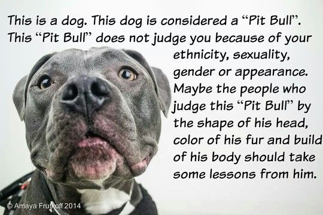

Despite their reputation, pitbulls consistently score high on temperament tests. In fact, according to the American Temperament Test Society, pitbull-type breeds often outperform popular breeds like Golden Retrievers and Beagles in stability, friendliness, and obedience. The CDC has acknowledged that breed alone is not a reliable predictor of dog aggression, and many experts agree that environment, training, and socialization play far greater roles. Yet pitbulls remain the most commonly euthanized dogs in U.S. shelters, largely due to stigma and breed-specific legislation.
“Unleashing the Truth About PitBulls” means confronting these misconceptions with evidence, advocating for fair treatment, and promoting responsible ownership rooted in facts—not fear.
Pitbulls are among the most misunderstood dog breeds in the world. Despite their loyalty and affection, they are often labeled as dangerous due to misinformation and media bias. This website aims to change that narrative by educating the public and promoting responsible ownership.
Breed-specific legislation has led to unnecessary fear and discrimination. Many loving dogs are euthanized simply because of their appearance. We believe every dog deserves a chance, and every person deserves the truth.
Proper training and socialization are key to raising a well-behaved pitbull. These dogs thrive in structured environments with clear boundaries and positive reinforcement. They are eager to please and incredibly intelligent.
Responsible ownership includes regular vet visits, exercise, and mental stimulation. Pit bulls are not inherently aggressive—they respond to the care and guidance they receive. With the right support, they become loyal companions and family protectors.
Job Description: Animal advocates work to promote the welfare of animals through education, outreach, rescue coordination, and policy change.
Knowledge & Skills: Public speaking, community organizing, animal behavior knowledge, digital communication, and fundraising.
Training & Education: Degrees or certifications in animal science, communications, or related fields; hands-on experience with rescue organizations.
Salary & Benefits Salaries range from $30,000 to $60,000 annually, with benefits often including flexible schedules, remote work opportunities, and the reward of making a difference.
Learn about becoming a Certified Professional Dog Trainer: CCPDT Certification
| Category | Details |
|---|---|
| Job Description | Promote animal welfare through education, outreach, and policy change. |
| Knowledge & Skills | Public speaking, animal behavior, community organizing, fundraising. |
| Training & Education | Animal science or communications degree; rescue experience. |
| Salary & Benefits | $30,000–$60,000/year; flexible schedules; meaningful work. |
Thousands of pitbulls sit in shelters waiting for a second chance. Adopting a rescue not only saves a life—it helps dismantle harmful stereotypes. We encourage potential adopters to meet these dogs with open hearts and informed minds.
Advocacy starts with education. Share facts, challenge myths, and speak up for those who can't. Together, we can create a world where pitbulls are judged by their character, not their breed.
Whether you're a dog owner, advocate, or simply curious, you can help change the narrative. Share facts, support local rescues, and speak out against breed descrimination. Together, we can unleash the truth.
Explore these trusted sources to learn more and get involved:
Click the image below to learn more about pit bull advocacy:
